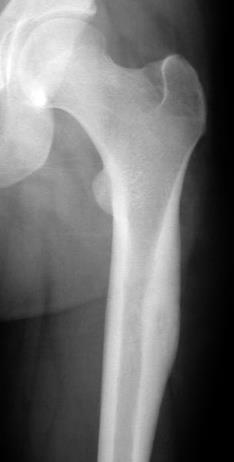

Olhe a cortical com calma. O detalhe que decide está no osso, e não grita.
Paciente masculino, 15 anos, com dor na coxa. Com a imagem radiográfica a seguir, a principal hipótese diagnóstica é
Quatro negativos. Só um combina com a idade, com o lugar no osso e com o que a cortical está fazendo.
Rapaz de 15 anos. 76% dos casos entre 5 e 24 anos, quase 3 homens para 1 mulher.
Fêmur proximal, o local isolado mais comum. A dor costuma ser referida à coxa ou ao joelho.
Cortical grossa, lisa, sem destruição: é a reação ao nicho, que a esclerose às vezes esconde.
“A RM é o exame que engana: mostra edema e espessamento sem lesão discreta. Para achar o nicho, a TC é o melhor exame.”